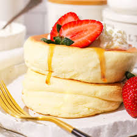

Fluffy Japanese Soufflé Pancakes (Breakfast)
Thick, jiggly pancakes that are lighter than air

Ingredients
- 2 large eggs (separated)
- 3 tbsp milk
- ¼ cup (30g) all-purpose flour
- ½ tsp baking powder
- 2 tbsp (25g) sugar
- 1 tbsp oil or butter for cooking
Instructions
- Whisk egg yolks, milk, flour, and baking powder into a smooth batter.
- In a separate bowl, beat egg whites until foamy. Gradually add sugar and beat until stiff peaks form (like shaving cream).
- Fold ⅓ of the whites into the yolk batter gently, then fold in the rest until just combined.
- Heat a non-stick pan with oil over low heat. Place a round metal ring mold (or just spoon thick piles) into the pan.
- Pour batter into molds, cover the pan, and cook for 4 minutes. Flip carefully, add a teaspoon of water to the pan, cover, and cook another 4 minutes.
- Serve immediately with butter, honey, or maple syrup.